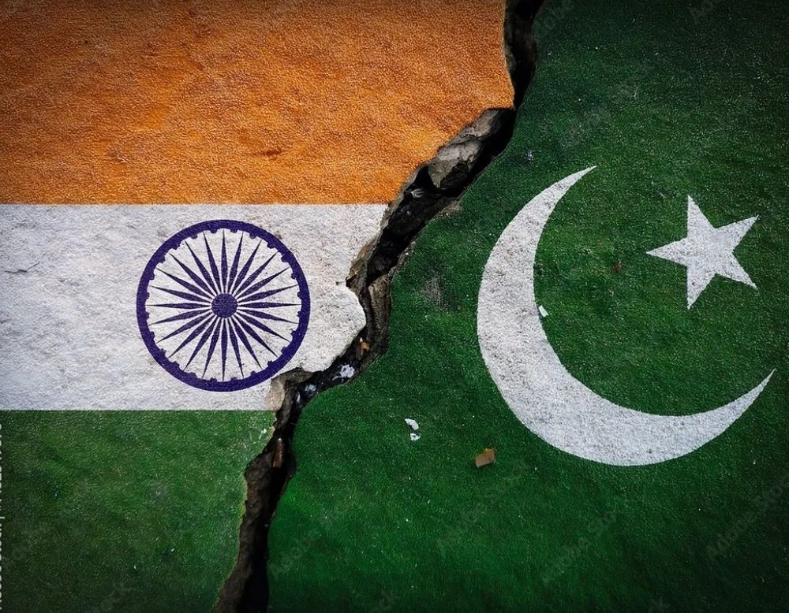

An Analysis of the 2025 India-Pakistan Conflict:

From Regional Flashpoint to Global Faultline
Author: Dr. Shaoyuan Wu
ORCID: https://orcid.org/0009-0008-0660-8232
Affiliation: Global AI Governance and Policy Research Center, EPINOVA
Date: May 10, 2025
1. Introduction
In May 2025, the India-Pakistan conflict escalated from a terrorist attack in Kashmir into a series of drone and missile exchanges within days. Then, a ceasefire was rapidly reached under U.S. leadership and multilateral mediation. While it appeared to be a controllable regional crisis, the conflict in fact revealed four structural trends within the contemporary international political system: the enduring volatility of regional hotspots, the normalization of "controllable warfare" between nuclear powers, the lowering military action threshold due to unmanned platforms, and a new geopolitical fracture driven by the involvement of West Asia–Middle Eastern Islamic states.
2. Regional Hotspots Remain Strategic Vulnerabilities
Once again, the terrorist attack in Pahalgam, located in Indian-controlled Kashmir, confirmed the region's fundamental instability as the "powder keg of Asia." Interwoven religious and ethnic tensions, contested sovereignty, and persistent terrorism make any civilian-targeted event susceptible to extreme political escalation. India swiftly attributed the attack to Pakistan-based militant groups and launched cross-border strikes, illustrating the fusion of counterterrorism and sovereignty in its state strategy. Meanwhile, Pakistan leveraged reports of civilian casualties to construct a narrative of moral retaliation, opening a new front in the battle for public opinion. This kind of "structural asymmetric conflict" exemplifies the type of crisis where global governance mechanisms struggle to intervene effectively.
3. Controlled Warfare Between Nuclear States and the Erosion of Strategic Deterrence Boundaries
Despite both being nuclear powers, India and Pakistan engaged in missile and drone warfare, signaling that nuclear deterrence is no longer an absolute conflict inhibitor. Traditionally considered a failsafe against escalation, nuclear weapons now coexist with precise, calibrated strikes that remain below the nuclear threshold. This shift introduces a new model of "sub-threshold conventional engagement" characterized by limited scope, episodic clashes, and the absence of decisive outcomes. Such developments fundamentally challenge global strategic stability and compel the international community to reconsider the definitions and boundaries of war in an age marked by deterrence ambiguity, asymmetric tactics, and the spread of low-intensity conflict technologies.
4. Drone Warfare Is Reshaping the Rules of Engagement
This conflict marked the first large-scale drone war between nuclear-armed states. The low risk, high efficiency, and scalable nature of unmanned systems significantly lowers the decision-making threshold for military operations. Unmanned reconnaissance, strike, and defense systems are becoming the new norm. Notably, as countries such as Iran and Turkey transfer drone technology to Pakistan, unmanned warfare may emerge as a “reverse balancer” that enables weaker states to challenge stronger ones. However, existing international legal and ethical frameworks offer no clear response to this evolution, leaving the legitimacy of such actions in a legal gray zone. The future may require the establishment of a new legal regime for unmanned warfare—perhaps akin to a “Hague Convention for drones.”
5. A New Geopolitical Fracture Under New Islamic World Power Involvement
The diplomatic responses to this conflict clearly illustrated a divide marked by "Global North vs. Global South" dynamics and deeper civilizational undertones. The United States, Japan, and other Indo-Pacific nations quickly expressed support for India's “self-defense” strikes. In contrast, Iran, Turkey, and Saudi Arabia condemned India’s “aggression” and backed Pakistan’s counterattacks. This geopolitical polarization suggests the formation of a global rift influenced by what may be described as an “Islamic intermediary alignment.” In the wake of the Ukraine crisis, the global order is increasingly characterized by a multipolar structure where Western powers and Global South actors confront each other across multiple domains. The India-Pakistan crisis may further push the Indo-Pacific framework into direct opposition with the emerging Islamic geopolitical sphere. South Asia is becoming a new rift valley linking territorial tectonics and ideological divides across Eurasia.
6. Conclusion
The India-Pakistan conflict may have "ended with a ceasefire," but it marks the beginning of a new era—one shaped by technological dominance, ideological entanglement, weakened nuclear deterrence, and fragile global institutions. Moving forward, the international community must:
- Build limited conflict management mechanisms among nuclear-armed states;
- Establish international rules for unmanned warfare;
- Strengthen strategic early warning systems for persistent hotspots;
- Promote dialogue and mediation across civilizations to prevent regional conflicts from escalating into global ideological fractures.
This is the true lesson of the 2025 India-Pakistan conflict: war may not begin with missiles, but with institutional vacuums; peace may not arise from strength alone, but from visionary design and renewed rulemaking.
Recommended Citation:
Wu, S.-Y. (2025). An Analysis of the 2025 India-Pakistan Conflict: From Regional Flashpoint to Global Faultline. EIPINOVA. https://epinova.org/f/epistemic-humility-in-agi-toward-ethical-adaptive-intelligence.
Share this post: